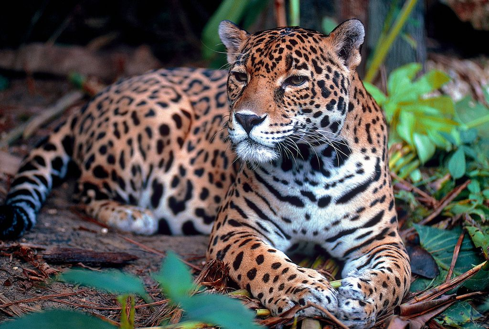
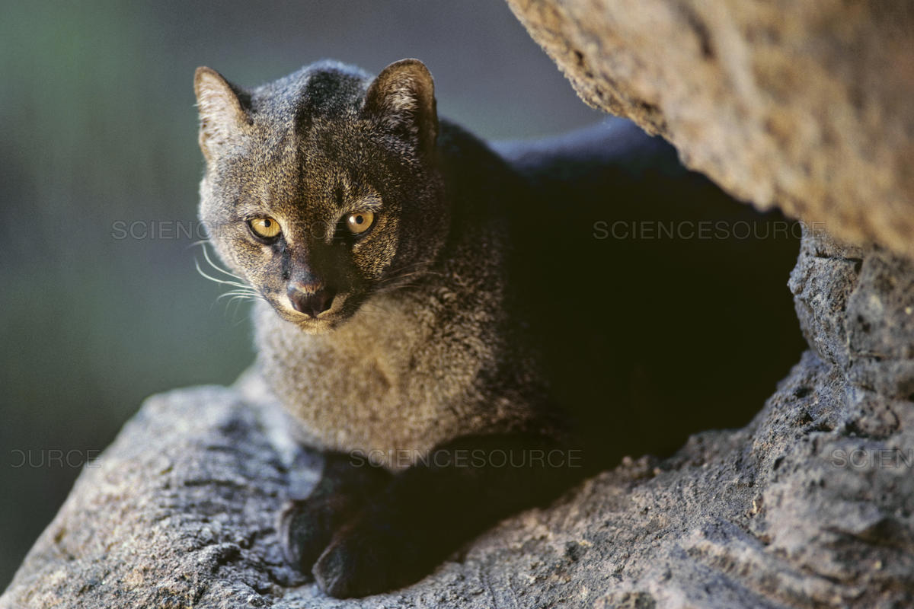
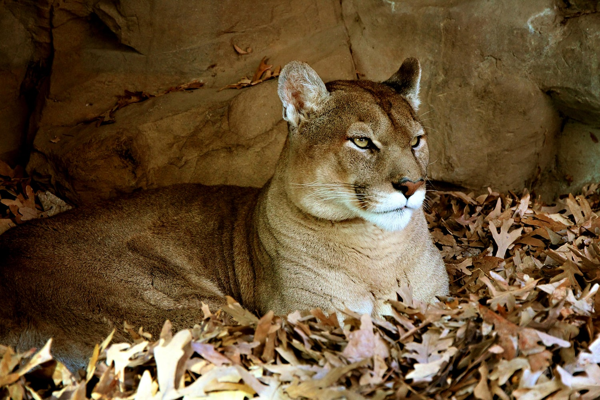
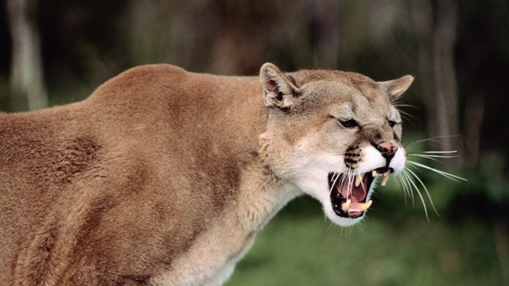
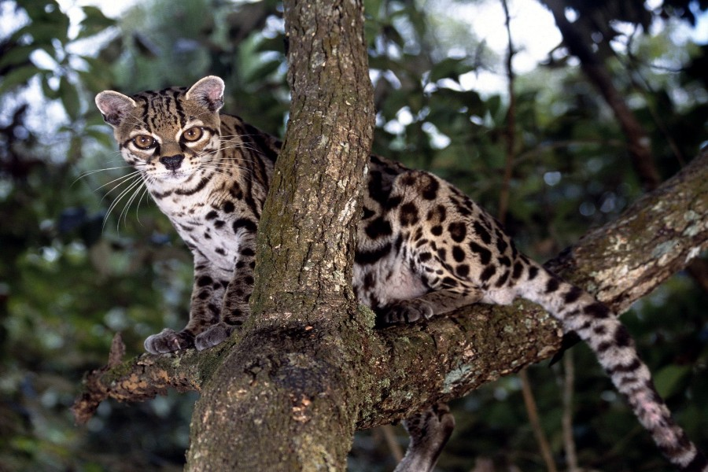
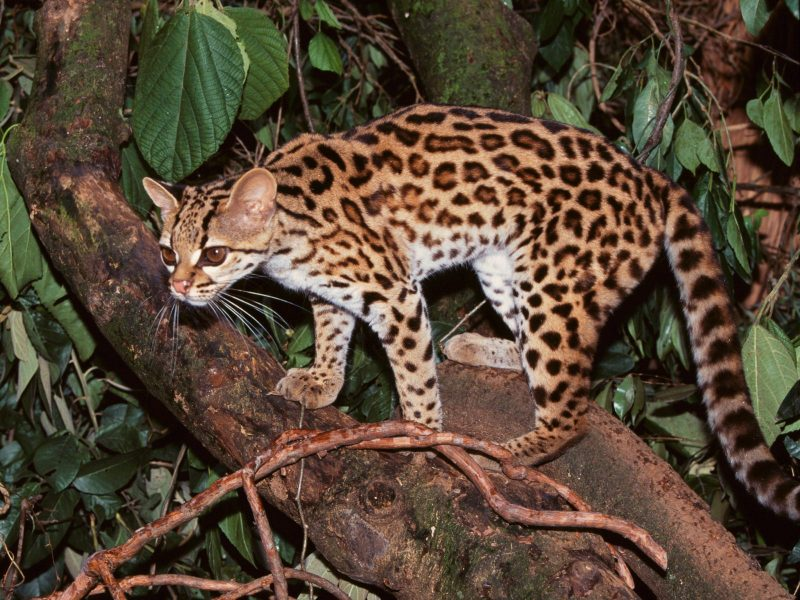
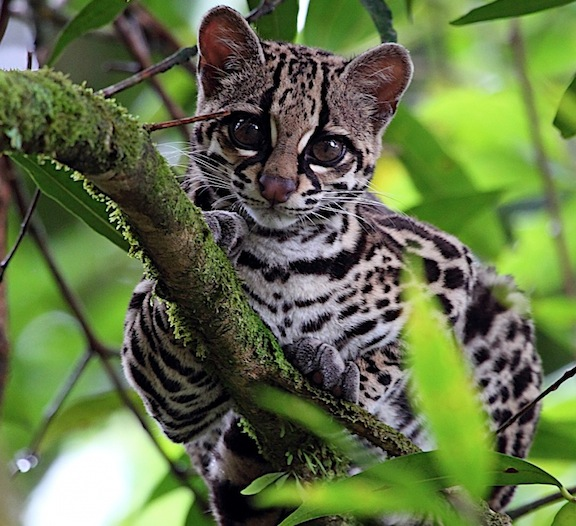

HOME
GRANDES FELINOS QUE EXISTEN EN COLOMBIA
| ESPECIES | ||
|---|---|---|
| JAGUAR O PANTHERA ONCA:
Sl felino más grande de América y el tercero en tamaño del mundo. Se caracteriza por su color de piel amarilla con puntos negros. En Colombia vive en áreas protegidas como la Serranía de Chibiriquete, así como en los parques Tayrona, La Paya, El Tuparro y Cahuinarí. |
 | |
| EL JAGUARUNDÍ O PUMA YAGOUAROUNDI:
Se diferencia de otros felinos de su especie por la uniformidad de su pelaje, que puede ser pardo o negro. Es de talla pequeña, del tamaño de un gato doméstico. Alcanza una longitud de 50 a 70 centímentros de largo, más la cola que mide de 30 a 60 cm. Caza animales pequeños. |
 | |
| PUMA CONCOLOR:
El segundo mayor felino del continente americano, después del jaguar, y el quinto más grande del mundo. Se caracteriza por ser ágil, esbelto y tener un solo color en su pelaje (habano, café, rojizo y gris). Come cualquier animal que pueda cazar, desde insectos hasta ungulados. Mide entre 60 y 80 centímetros de altura de pie. |
 |  |
| OCELOTE O LEOPARDUS PARDALIS | MARGAY O LEOPARDUS WIEDII | ONCILLA LEOPARDUS O TIGRINUS |
|---|---|---|
|  |  |  |
|
Es un felino de tamaño mediano con una longitud de entre 70 y 90 cm. En Mesoamérica es el tercer felino más grande después del jaguar y el puma. Es una especie terrestre, pero también arborícola, de comportamiento nocturno. Se alimenta de mamíferos medianos y pequeños como monos y murciélagos. Además comen reptiles y aves. |
Es conocido como un gato nocturno y solitario, perteneciente al grupo de los tigrillos. Tiene un tamaño y un peso menor que el ocelote, especie con la que se le suele confundir. Se caracteriza por su larga cola que puede medir más del 70% de la longitud de su cuerpo. Se alimenta principalmente de animales arborícolas. |
Es de hábitos nocturnos. Es el felino salvaje más pequeño que existe en Colombia y, a su vez, el más amenazado debido que habita en páramos y bosques de niebla. Alcanza una longitud de entre 39 y 78 centímetros. Su pelaje va desde el marrón claro al ocre oscuro, con rosetas negras. Se alimenta de roedores y pájaros. |